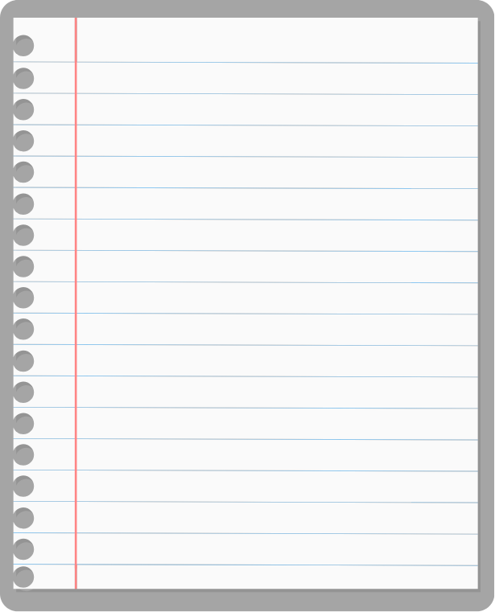
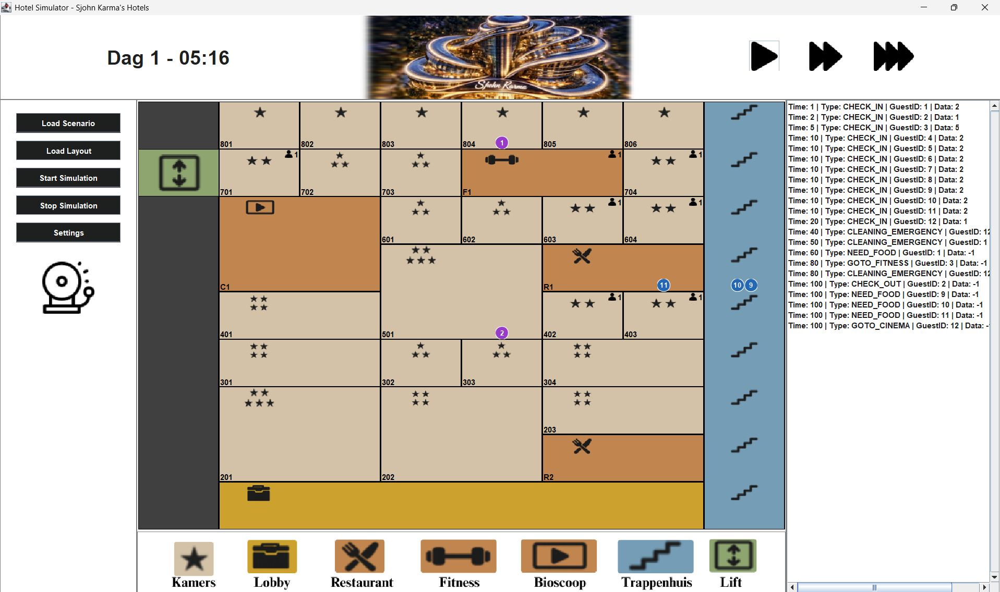

Portfolio

Ik programmeer al sinds ik op de basisschool zit, ik werkte toen in Scratch.
Sindsdien heb ik altijd al een fascinatie gehad met ICT en software engineering.
Over de jaren heb ik aan aardig wat projecten gewerkt die ik niet allemaal terug kan vinden.
Hieronder heb ik een collage gemaakt van een paar van mijn projecten over de jaren
waar ik het meest trots op ben. Enjoy!



Hotel Simulatie
In semester 2 van het eerste jaar moesten wij een
Hotelsimulatie maken als project voor het jaar.
Gasten moesten in en uit checken, faciliteiten
gebruiken, de lift gebruiken of met de trap gaan, en
worden gecharged voor hun tijd in het hotel.
De docent was altijd enthousiast om ons project te zien
en ik heb uiteindelijk het project afgerond met een 8!